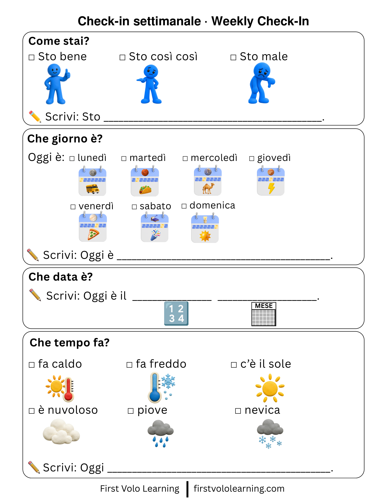

Tutto l’anno · All year
Check-in settimanale
Weekly Check-In
Un check-in riutilizzabile per parlare e scrivere di come si sta, del giorno, della data e del tempo. A reusable weekly check-in for feelings, day, date, weather, and short written responses.
Come stai?
Giorno
Data
Tempo